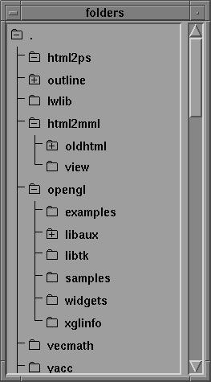
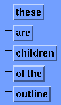
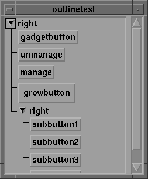

The Outline Widget is something I'm working on when I'm not busy doing anything else; hence, it's a slow project. It is currently in alpha state (v0.1.1alpha). I'd prefer feedback on the usability on this code, so please go ahead and download it.
It is really two widgets, that together form the basis for multilevel outlines. The advantage of using two widgets instead of a huge, complex tree-like widget becomes apparent when there is need for a flexible layout scheme with different types of outlines.
The outline widget is a manager widget, not unlike a simple column manager. In addition to manage children, it draws an outline.

The other widget, the handle widget, manages a handle, a label, and an outline widget. It enables collapsing and expanding, by unmanaging and managing its outline widget. It manages children left to right, so having multiple children is possible.
A typical example of a handle widget would be a toggle button, or an arrow button that changes its direction depending on the state of the outlineHandle (collapsed | expanded).
I'm currently working on a folder widget which uses the outline widget to display the contents of a folder (directory). This widget is not subclassed from the handle widget, but is similar in design. It will be available in the 0.2alpha release.

This is alpha software. Now you are warned. The sources are available here. Note that this file will untar into the current directory.
The sources are also available at ftp.x.org in the /contrib/widgets/motif area as outline.tar.gz.